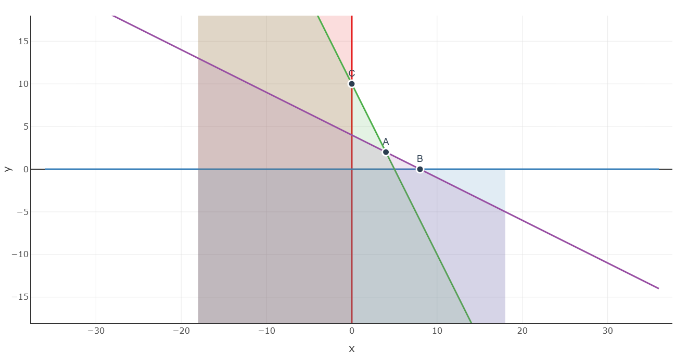

Interactive Linear Programming Tools
Explore fundamental methods for solving linear programming problems through interactive visualizations. Experiment with constraints, objective functions, and solution techniques in real time.
Detailed Explorations

Method of Corners (Graphical Method)
Visualize the feasible region, corner points, and optimal solution for 2-variable linear programming problems.
Explore →